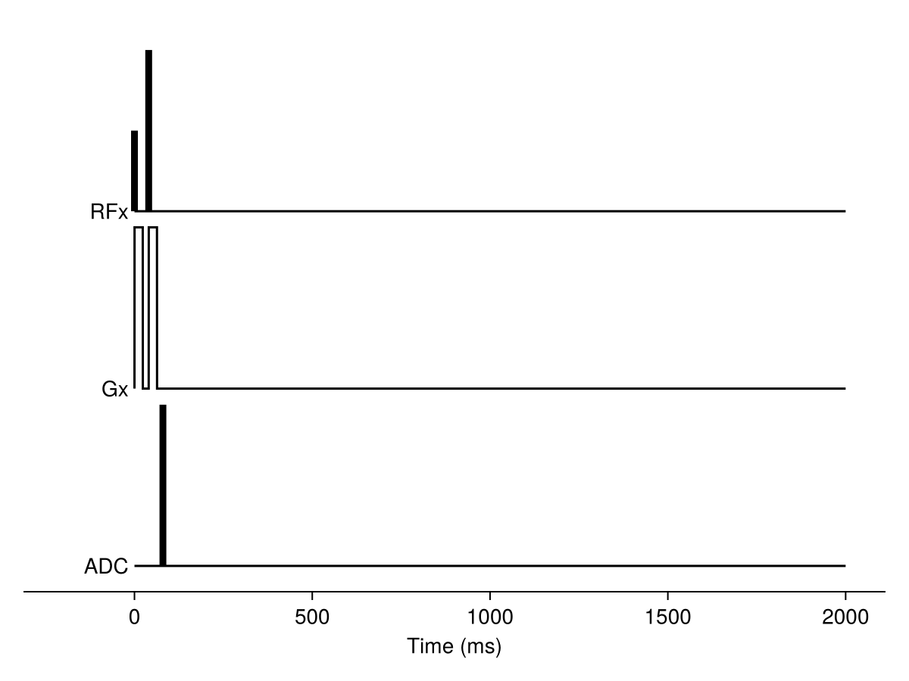

Tutorial
This tutorial will walk through an example of modelling the MRI signal evolution for a diffusion-weighted sequence. The spins in this simulation will be constrained by regularly packed cylinders. This tutorial will use the command line interface, which we assume is available through the mcmr command (see installation instructions). If you would prefer to interact with MCMRSimulator in Julia, you can find a tutorial doing the same analysis here.
The command line tool requires one or more MRI sequence definitions as input. These can be supplied as pulseq files, such as those produced by MRIBuilder.jl.
In general, running a simulation will consist of the following two steps:
- Creating a geometry using one or more calls to
mcmr geometry(full description). - Running the actual simulation using
mcmr run.
We will look through each of these steps below.
Defining the geometry
First we will define a geometry formed of regularly packed axons. This is represented by a single cylinder pointing in the z-direction with a radius of 1 micrometer that repeats itself every 2.5 micrometer (in both the x-, and y-direction).
mcmr geometry create cylinders 1 geometry.json --radius 1 --repeats 2.5,2.5This will create a JSON file with the full information on the geometry:
{
"type": "Cylinders",
"number": 1,
"#radius_description": "Radius of the cylinder. Field is required. Expected type: Float64.",
"radius": 1.0,
"#rotation_description": "Rotation applied to all obstructions in group. Can be set to a matrix or one of :x, :y, or, :z (see [`get_rotation`](@ref)). Field is required. Expected type: StaticArraysCore.SMatrix{3, 2, Float64, 6}.",
"rotation": [[1.0,0.0,0.0],[0.0,1.0,0.0]],
"#R1_surface_description": "Additional longitudinal relaxation rate (kHz). Surface property. Field is required. Expected type: Float64.",
"R1_surface": 0.0,
"#R1_inside_description": "Additional longitudinal relaxation rate (kHz). Inside property. Field is required. Expected type: Float64.",
"R1_inside": 0.0,
"#R2_surface_description": "Additional transverse relaxation rate (kHz). Surface property. Field is required. Expected type: Float64.",
"R2_surface": 0.0,
"#R2_inside_description": "Additional transverse relaxation rate (kHz). Inside property. Field is required. Expected type: Float64.",
"R2_inside": 0.0,
"#off_resonance_surface_description": "Additional off-resonance field offset (kHz). Surface property. Field is required. Expected type: Float64.",
"off_resonance_surface": 0.0,
"#off_resonance_inside_description": "Additional off-resonance field offset (kHz). Inside property. Field is required. Expected type: Float64.",
"off_resonance_inside": 0.0,
"#position_description": "Spatial offset of obstruction from origin. Field is required. Expected type: StaticArraysCore.MVector{2, Float64}.",
"position": [0.0,0.0],
"#g_ratio_description": "Inner/outer radius used for susceptibility calculation Field can be null. Expected type: Float64.",
"g_ratio": 1.0,
"#susceptibility_iso_description": "Isotropic component of the susceptibility (in ppm um). It can be calculated by multiplying the isotropic susceptibility of the simulated tissue by the thickness. Field can be null. Expected type: Float64.",
"susceptibility_iso": -0.1,
"#susceptibility_aniso_description": "Anisotropic component of the susceptibility (in ppm um). It can be calculated by multiplying the anisotropic susceptibility of the simulated tissue by the thickness Field can be null. Expected type: Float64.",
"susceptibility_aniso": -0.1,
"#lorentz_radius_description": "Only compute field explicitly for cylinders with this Lorentz radius. Field can be null. Expected type: Float64.",
"lorentz_radius": 5.0,
"#repeats_description": "Length scale on which the obstructions are repeated (um). Field can be null. Expected type: StaticArraysCore.MVector{2, Float64}.",
"repeats": [2.5,2.5],
"#use_boundingbox_description": "Use bounding boxes for an initial filtering of possible intersections. Field can be null. Expected type: Bool.",
"use_boundingbox": true,
"#grid_resolution_description": "Resolution of the grid that the volume is split up into (um). Defaults to roughly one grid element per obstruction. Field can be null. Expected type: Float64.",
"grid_resolution": null,
"#dwell_time_description": "Average time a particle stays stuck to the surface (ms). Surface property. Field can be null. Expected type: Float64.",
"dwell_time": null,
"#density_description": "Surface density of stuck particles relative to the volume density (um). Surface property. Field can be null. Expected type: Float64.",
"density": null,
"#permeability_description": "Rate of particle passing through the obstruction in arbitrary units. Surface property. Field can be null. Expected type: Float64.",
"permeability": null,
"#relaxation_description": "Rate of signal loss at each collision. The actual signal loss at each collision is e^(-x * sqrt(t)), where x is this rate and t is the timestep. Surface property. Field can be null. Expected type: Float64.",
"relaxation": null,
"#size_scale_description": "Size of the smallest obstructions. If not set explicitly, this will be determined by the minimum radius or distance between objects (see `size_scale`). Field can be null. Expected type: Float64.",
"size_scale": null
}
You can see how that the repeats and radius keywords have been set to our predefined values. You can alter these and other geometry properties by editing this JSON directly or using the flags when creating the geometry. For a full overview of these flags, you can run:
mcmr geometry create cylinders --helpusage: mcmr geometry create cylinders --radius RADIUS
[--rotation ROTATION]
[--R1_surface R1_SURFACE]
[--R1_inside R1_INSIDE]
[--R2_surface R2_SURFACE]
[--R2_inside R2_INSIDE]
[--off_resonance_surface OFF_RESONANCE_SURFACE]
[--off_resonance_inside OFF_RESONANCE_INSIDE]
[--position POSITION] [--g_ratio G_RATIO]
[--susceptibility_iso SUSCEPTIBILITY_ISO]
[--susceptibility_aniso SUSCEPTIBILITY_ANISO]
[--lorentz_radius LORENTZ_RADIUS]
[--repeats REPEATS] [--no-use_boundingbox]
[--grid_resolution GRID_RESOLUTION]
[--dwell_time DWELL_TIME] [--density DENSITY]
[--permeability PERMEABILITY]
[--relaxation RELAXATION]
[--size_scale SIZE_SCALE] [-h] number
output_file
Create a geometry JSON file filled with only cylinders with any
properties defined by the flags.
positional arguments:
number Number of obstructions to create. (type:
Int64)
output_file Geometry JSON output filename.
optional arguments:
--radius RADIUS Radius of the cylinder. Field is required.
Expected type: Float64. (type:
FieldParser{Float64})
--rotation ROTATION Rotation applied to all obstructions in group.
Can be set to a matrix or one of :x, :y, or,
:z (see [`get_rotation`](@ref)). Field is
required. Expected type:
StaticArraysCore.SMatrix{3, 2, Float64, 6}.
default value: [1.0 0.0; 0.0 1.0; 0.0 0.0]
(type: RotationParser{2}, default:
RotationParser{2}([1.0 0.0; 0.0 1.0; 0.0
0.0]))
--R1_surface R1_SURFACE
Additional longitudinal relaxation rate (kHz).
Surface property. Field is required. Expected
type: Float64. default value: 0.0 (type:
FieldParser{Float64}, default:
FieldParser{Float64}(0.0))
--R1_inside R1_INSIDE
Additional longitudinal relaxation rate (kHz).
Inside property. Field is required. Expected
type: Float64. default value: 0.0 (type:
FieldParser{Float64}, default:
FieldParser{Float64}(0.0))
--R2_surface R2_SURFACE
Additional transverse relaxation rate (kHz).
Surface property. Field is required. Expected
type: Float64. default value: 0.0 (type:
FieldParser{Float64}, default:
FieldParser{Float64}(0.0))
--R2_inside R2_INSIDE
Additional transverse relaxation rate (kHz).
Inside property. Field is required. Expected
type: Float64. default value: 0.0 (type:
FieldParser{Float64}, default:
FieldParser{Float64}(0.0))
--off_resonance_surface OFF_RESONANCE_SURFACE
Additional off-resonance field offset (kHz).
Surface property. Field is required. Expected
type: Float64. default value: 0.0 (type:
FieldParser{Float64}, default:
FieldParser{Float64}(0.0))
--off_resonance_inside OFF_RESONANCE_INSIDE
Additional off-resonance field offset (kHz).
Inside property. Field is required. Expected
type: Float64. default value: 0.0 (type:
FieldParser{Float64}, default:
FieldParser{Float64}(0.0))
--position POSITION Spatial offset of obstruction from origin.
Field is required. Expected type:
StaticArraysCore.MVector{2, Float64}. default
value: [0.0, 0.0] (type:
FieldParser{MVector{2, Float64}}, default:
FieldParser{MVector{2, Float64}}([0.0, 0.0]))
--g_ratio G_RATIO Inner/outer radius used for susceptibility
calculation Field can be null. Expected type:
Float64. default value: 1.0 (type:
FieldParser{Float64}, default:
FieldParser{Float64}(1.0))
--susceptibility_iso SUSCEPTIBILITY_ISO
Isotropic component of the susceptibility (in
ppm um). It can be calculated by multiplying
the isotropic susceptibility of the simulated
tissue by the thickness. Field can be null.
Expected type: Float64. default value: -0.1
(type: FieldParser{Float64}, default:
FieldParser{Float64}(-0.1))
--susceptibility_aniso SUSCEPTIBILITY_ANISO
Anisotropic component of the susceptibility
(in ppm um). It can be calculated by
multiplying the anisotropic susceptibility of
the simulated tissue by the thickness Field
can be null. Expected type: Float64. default
value: -0.1 (type: FieldParser{Float64},
default: FieldParser{Float64}(-0.1))
--lorentz_radius LORENTZ_RADIUS
Only compute field explicitly for cylinders
with this Lorentz radius. Field can be null.
Expected type: Float64. default value: 5.0
(type: FieldParser{Float64}, default:
FieldParser{Float64}(5.0))
--repeats REPEATS Length scale on which the obstructions are
repeated (um). Field can be null. Expected
type: StaticArraysCore.MVector{2, Float64}.
(type: FieldParser{MVector{2, Float64}})
--no-use_boundingbox Use bounding boxes for an initial filtering of
possible intersections. Field can be null.
Expected type: Bool. default value: true
--grid_resolution GRID_RESOLUTION
Resolution of the grid that the volume is
split up into (um). Defaults to roughly one
grid element per obstruction. Field can be
null. Expected type: Float64. (type:
FieldParser{Float64})
--dwell_time DWELL_TIME
Average time a particle stays stuck to the
surface (ms). Surface property. Field can be
null. Expected type: Float64. (type:
FieldParser{Float64})
--density DENSITY Surface density of stuck particles relative to
the volume density (um). Surface property.
Field can be null. Expected type: Float64.
(type: FieldParser{Float64})
--permeability PERMEABILITY
Rate of particle passing through the
obstruction in arbitrary units. Surface
property. Field can be null. Expected type:
Float64. (type: FieldParser{Float64})
--relaxation RELAXATION
Rate of signal loss at each collision. The
actual signal loss at each collision is e^(-x
* sqrt(t)), where x is this rate and t is the
timestep. Surface property. Field can be null.
Expected type: Float64. (type:
FieldParser{Float64})
--size_scale SIZE_SCALE
Size of the smallest obstructions. If not set
explicitly, this will be determined by the
minimum radius or distance between objects
(see `size_scale`). Field can be null.
Expected type: Float64. (type:
FieldParser{Float64})
-h, --help show this help message and exit
How these various properties affect the simulation is described here.
The procedure to create Walls, Spheres, or Annuli is very similar as for the Cylinders illustrated above. Randomly distributed cylinders, annuli, and spheres can be created using mcmr geometry create-random.
Defining the sequence
In this case we will use an idealised DWI sequence produced by MRIBuilder.jl. Note that any pulseq file can be used instead.
using MRIBuilder
seq = DWI(TE=80, bval=2., Δ=40, δ=:min, TR=2000)
write_sequence("dwi.seq", seq)
# Optional to plot the sequence
using CairoMakie
f = plot_sequence(seq)
f
******************************************************************************
This program contains Ipopt, a library for large-scale nonlinear optimization.
Ipopt is released as open source code under the Eclipse Public License (EPL).
For more information visit https://github.com/coin-or/Ipopt
******************************************************************************
Running the simulation
To get instructions on running the simulations, we can check the help message of mcmr run:
mcmr run --helpusage: mcmr run [-D DIFFUSIVITY] [--R1 R1] [--R2 R2] [--bvecs BVECS]
[-o OUTPUT-SIGNAL] [--output-snapshot OUTPUT-SNAPSHOT]
[--nTR NTR] [-T TIMES [TIMES...]] [--skip-TR SKIP-TR]
[--subset SUBSET [SUBSET...]] [-N NSPINS]
[--voxel-size VOXEL-SIZE]
[--longitudinal LONGITUDINAL]
[--transverse TRANSVERSE] [--phase PHASE]
[--seed SEED] [-h] geometry [sequence...]
Runs a Monte Carlo simulation of the MRI signal evolution for spins
interacting with the geometry.
optional arguments:
-h, --help show this help message and exit
Define the simulation parameters:
geometry JSON file describing the spatial configuration
of any obstructions as well as biophysical
properties associated with those obstructions.
Can be generated using `mcmr geometry`.
Alternatively, a mesh file can be provided.
sequence One of more pulseq .seq files describing the
sequences to be run.
-D, --diffusivity DIFFUSIVITY
Diffusivity of free water (um^2/ms). (type:
Float64, default: 3.0)
--R1 R1 Longitudinal relaxation in 1/ms. This
relaxation rate will at the very least be
applied to free, extra-cellular spins. It
might be overriden in the 'geometry' for bound
spins or spins inside any obstructions. (type:
Float64, default: 0.0)
--R2 R2 Transverse relaxation in 1/ms. This relaxation
rate will at the very least be applied to
free, extra-cellular spins. It might be
overriden in the 'geometry' for bound spins or
spins inside any obstructions. (type: Float64,
default: 0.0)
--bvecs BVECS ASCII text file with gradient orientations in
FSL format
(https://fsl.fmrib.ox.ac.uk/fsl/fslwiki/FDT/UserGuide#Processing_pipeline).
Output flags. At least one is required:
-o, --output-signal OUTPUT-SIGNAL
Writes the total signal at the readouts to
this file as a comma-separated value (CSV)
table.
--output-snapshot OUTPUT-SNAPSHOT
Writes the state of all the spins at the
readouts to this file as a comma-separated
value (CSV) table.
Readout flags. These control when the signal/spin states will be read out:
--nTR NTR Acquire the signal provided at the sequence
readouts for this many repetition times (TRs).
Output will be stored as a CSV file. (type:
Int64, default: 1)
-T, --times TIMES [TIMES...]
Acquire the signal at the given times within
each TR (in ms). Multiple values can be
provided (e.g., '-T 0 10 15.3'). By default,
the Readout markers in the sequence will be
used instead. (type: Float64)
--skip-TR SKIP-TR The number of repetition times the simulation
will run before starting to acquire data.
(type: Int64, default: 0)
--subset SUBSET [SUBSET...]
Can be provided multiple times. For each time
it is provided, the signal will be computed at
each readout for a specific subset of spins.
This subset is defined by one or two values
from bound/free/inside/outside. Afterwards
they can include an integer value to select a
specific geometry to consider the bound/inside
state of. An additional integer value could be
given to select a specific obstruciton within
that geometry. For example: - `--subset free`:
include any free spins - `--subset inside`:
include any spins inside any geometry -
`--subset outside 2`: include any spins
outside of the second obstruction group in the
geometry - `--subset inside bound 2 3`:
include any spins stuck to the inside surface
of the 3rd obstruction in the second
obstruction group of the geometry.
Initialisation flags. These control the spins initial state:
-N, --Nspins NSPINS Number of spins to simulate. Ignored if --init
is set. (type: Int64, default: 10000)
--voxel-size VOXEL-SIZE
Size of the voxel (in mm) over which the
initial spins are spread. (type: Float64,
default: 1.0)
--longitudinal LONGITUDINAL
Initial value of the longitudinal
magnetisation for each spin. Note the the
equilibrium longitudinal magnetisation for
each spin is 1. (type: Float64, default: 1.0)
--transverse TRANSVERSE
Initial value of the magnitude of the
transverse magnetisation for each spin. (type:
Float64, default: 0.0)
--phase PHASE Initial value of the phase of the transverse
magnetisation for each spin in degrees. (type:
Float64, default: 0.0)
--seed SEED Initialisation for random number seed. Supply
this to get reproducible results. If --init is
also set, this flag will override the seed
stored in this initialisation file. (type:
Int64)
We can see that in addition to defining the geometry and the sequence, we can also control the simulation properties such as the --diffusivity, --R1, and --R2.
The simulation is initialised by randomly distributing a number of spins (set by --Nspins) uniformly across a bounding box with size given by --voxel-size. This initial state might also contain bound spins (if the --density flag was set to a non-zero value during the geometry generation).
The DWI sequence defined above contains a MRIBuilder.SingleReadout object at the echo time (80 ms). By default, this is used for readout:
mcmr run geometry.json dwi.seq -o signal.csvdf = 1×12 DataFrame
Row │ sequence sequence_index bvec TR readout subset nspins longitudinal transverse phase Sx Sy
│ SubStrin… Int64 Int64 Int64 Int64 Int64 Int64 Float64 Float64 Float64 Float64 Float64
─────┼──────────────────────────────────────────────────────────────────────────────────────────────────────────────────────────
1 │ dwi.seq 1 0 1 1 0 10000 -4.44089e-12 10000.0 90.0 1.09226e-7 10000.0
┌ Info: # Timestep determination
│ Maximum timestep set by turtoisity constraint based on size of geometry to 0.01 ms.
│ Size scale of smallest object in the simulation was automatically determined to be 1.0 um.
│ If this value is too small, you can set the size scale explicitly by passing on `size_scale=<new_value>` to the `Simulator` constructor.
└ The actual timestep will be reduced based on the MR sequence(s).
This produces the CSV file, which looks like
sequence,sequence_index,bvec,TR,readout,subset,nspins,longitudinal,transverse,phase,Sx,Sy
dwi.seq,1,0,1,1,0,10000,-4.440892098500626e-12,10000.0,89.99999999937418,1.0922577985088293e-7,10000.0
The columns in this file store the following information:
- "sequence": integer; index of the sequence (always 1 if only single sequence used)
- "bvec": integer; index of the gradient orientation (if a
--bvecflag is provided) - "TR": integer; index of the repetition time that this data was acquired (between 1 and the value of
--nTR) - "readout": integer; index of the readout within a TR.
- "subset": integer; index of the subset of the total signal (e.g., intra-axonal) that has been output (see the
--subsetflag). The total signal will always be included with "subset" of 0. - "nspins": total number of spins contributing to the signal (might change for certain subsets of spins)
- "longitudinal": average longitudinal signal
- "transverse": average transverse signal
- "phase": average phase of the signal (in degrees)
- "Sx": signal strength in the x-direction
- "Sy": signal strength in the y-direction
We can also output the signal of specific subsets of spins. For example, in the following we request to separately the output for just the spins inside the cylinders and just the spins outside of the cylinders.
mcmr run geometry.json dwi.seq -o signal.csv --subset inside --subset outsidedf = 3×12 DataFrame
Row │ sequence sequence_index bvec TR readout subset nspins longitudinal transverse phase Sx Sy
│ SubStrin… Int64 Int64 Int64 Int64 Int64 Int64 Float64 Float64 Float64 Float64 Float64
─────┼───────────────────────────────────────────────────────────────────────────────────────────────────────────────────────────
1 │ dwi.seq 1 0 1 1 0 10000 -4.44089e-12 10000.0 90.0 -2.85801e-7 10000.0
2 │ dwi.seq 1 0 1 1 1 5049 -2.24221e-12 5049.0 90.0 5.06799e-9 5049.0
3 │ dwi.seq 1 0 1 1 2 4951 -2.19869e-12 4951.0 90.0 -2.90867e-7 4951.0
┌ Info: # Timestep determination
│ Maximum timestep set by turtoisity constraint based on size of geometry to 0.01 ms.
│ Size scale of smallest object in the simulation was automatically determined to be 1.0 um.
│ If this value is too small, you can set the size scale explicitly by passing on `size_scale=<new_value>` to the `Simulator` constructor.
└ The actual timestep will be reduced based on the MR sequence(s).
We can see two additional rows in the output. These new rows are the in same order as the --subset flags provided to mcmr run and can be distinguished based on the "subset" column.
sequence,sequence_index,bvec,TR,readout,subset,nspins,longitudinal,transverse,phase,Sx,Sy
dwi.seq,1,0,1,1,0,10000,-4.440892098500626e-12,10000.0,90.00000000163752,-2.8580059521815796e-7,10000.0
dwi.seq,1,0,1,1,1,5049,-2.242206420532966e-12,5049.0,89.99999999994249,5.067994584459753e-9,5049.0
dwi.seq,1,0,1,1,2,4951,-2.19868567796766e-12,4951.0,90.00000000336608,-2.90867402749204e-7,4951.0
We can see in the second row that inside the cylinders the transverse signal is very close to the number of spins, indicating that there has been very little dephasing due to the diffusion weighting inside the cylinders. On the other hand, we did lose most of the signal outside of the cylinders (i.e., the transverse signal is much lower than the number of spins in the third row). All the spins are either inside or outside the cylinders, so in this case the first row is simply the sum of the next two.
A more complete state of all the spins can be produced using the --output-snapshot flag. For example, the command
mcmr run geometry.json dwi.seq --output-snapshot snapshot.csv┌ Info: # Timestep determination
│ Maximum timestep set by turtoisity constraint based on size of geometry to 0.01 ms.
│ Size scale of smallest object in the simulation was automatically determined to be 1.0 um.
│ If this value is too small, you can set the size scale explicitly by passing on `size_scale=<new_value>` to the `Simulator` constructor.
└ The actual timestep will be reduced based on the MR sequence(s).
will produce a file named "snapshot.csv" with:
sequence,sequence_index,bvec,TR,readout,spin,x,y,z,longitudinal,transverse,phase,Sx,Sy
dwi.seq,1,0,1,1,1,-160.78210819071788,460.4100127693431,469.08972672401063,-4.440892098500626e-16,1.0,90.00000000625377,-1.0914889172754907e-10,1.0
dwi.seq,1,0,1,1,2,181.69595877366217,-10.73319274261172,451.98130930876084,-4.440892098500626e-16,1.0,90.00000000250034,-4.363921854226679e-11,1.0
dwi.seq,1,0,1,1,3,304.10988431001834,-21.309597701651057,-212.63876314549591,-4.440892098500626e-16,0.9999999999999999,90.00000003451916,-6.024730120858898e-10,0.9999999999999999
dwi.seq,1,0,1,1,4,-192.62483406041406,-271.1594744142253,402.8422800910929,-4.440892098500626e-16,1.0,89.99999978052013,3.8306464169578505e-9,1.0
...Each row corresponds to the state of a single spin. In addition to all the columns listed above, we now have 4 more columns:
- "spin": integer; index of the spin
- "x"/"y"/"z": floats; position of the spin at the time of the readout
The readout times can be adjusted using the --nTR, --time, and --skip-TR flags.